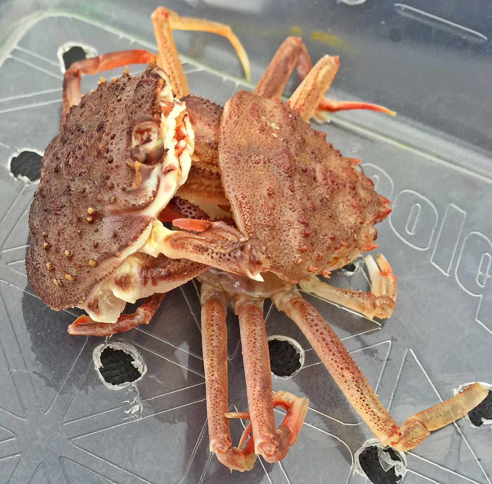

CRUSTACEANS

THE CRUSTY EXPLORER
Indulge yourself into these unique Sea Creatures that crawl both on the sea floor and land! Discover interesting facts about their species in matters of their development, and contribution and roles to the ecosystem.
Many interesting facts about these Creatures lie under this page, entertain yourself with their craftmanship and qualities if you wish.
An Opportune time for Discovery...
THE MOLTING PROCESS: 3 MAIN STAGES
The molting process in crustaceans, known as ecdysis, is crucial for growth as their hard exoskeleton cannot expand. During molting, enzymes weaken the old exoskeleton, allowing it to split and shed. The new, soft exoskeleton, which hardens over time, is absorbed by the body, leaving it vulnerable to predators and environmental stress. Further more, Molting also allows for regeneration of lost limbs or damaged appendages.

PRE-MOLTING STAGE
In this stage, a crustacean may seek for privacy and safety in preparation for the molting process. During this phase, calcium is absored from their old shell to create a new one.
MOLTING STAGE
The outer layer of its shell will begin to separate, as the new shell starts to form and emerge from underneath. It will pry itself out, until its previous exoskeleton is fully shed.

POST-MOLTING STAGE
Suggest that the process is successful, the crustacean may potentially be at risk with its newly exposed shell. It will take time for it to harden, and so the crustacean hides.

KRILL(Euphausiacea)
An essential component of the Antarctic food web, krill are tiny crustaceans that resemble shrimp they travel in big groups and are considered to be one of the most significant zooplankton species.
There is an abundance of krill in bodies of water; Euphausia superba has the highest biomass of any species on Earth, estimated to be between 125 and 750 mmt in the Antarctic Ocean.
CRAB(Brachyura)
The majority of crabs are found in the sea; even land crabs, which are common in tropical regions, typically visit the water sometimes and go through their juvenile phases there. One type of freshwater crab that is common in most of the world's warmer regions is the Lenten crab, or Potamon fluviatile, which is found in southern Europe.
Normally, crabs use their gills to breathe. These gills are located in two cavities under the sides of the carapace, but in real land crabs, the cavities enlarge and change to function as lungs.